Wonderland Trail
The 93-mile loop circling Mount Rainier's glaciers and meadows.
Wonderland Trail crosses the USA for 150 km and ends at Longmire. You begin at Longmire. Watch Walks moves you along it with the steps you already take, so it's about 6 weeks at 5,000 steps a day. Here are its 18 landmarks, in the order you meet them, photographed and written up.
- 150km end to end
- 18landmarks
- 6 weeksat 5,000 steps a day
- Longmirefinishes at

The landmarks of Wonderland Trail
18 landmarks, in walking order. Each photograph is by the person credited beneath it, used as they licensed it.
-
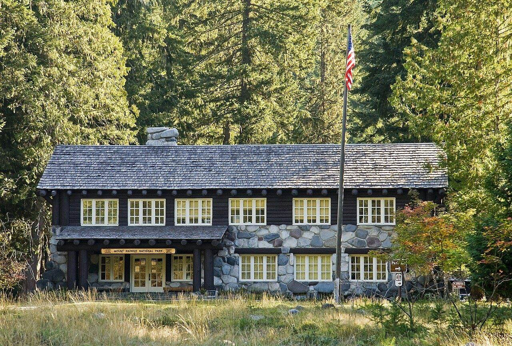
Photo: Acroterion · Wikimedia Commons, CC BY-SA 3.0 Longmire
The old National Park Inn creaks awake at Longmire, 2,700 feet up in the forest James Longmire settled after finding the mineral springs in 1883. Ninety-three miles of trail circle Mount Rainier from here, climbing and dropping some 22,000 feet before closing again at this porch. Mist hangs in the cedars. The mountain waits, unseen, to the north.
-
Devils Dream
Mosquitoes own the air at Devils Dream, the camp's cheerful name at odds with the whine around it. Five miles of climbing from Longmire end here, in forest below the Kautz Creek ridge. Kiya Lake sits a short way on, still and dark. Just above lie the open meadows of Indian Henry's Hunting Ground.
-
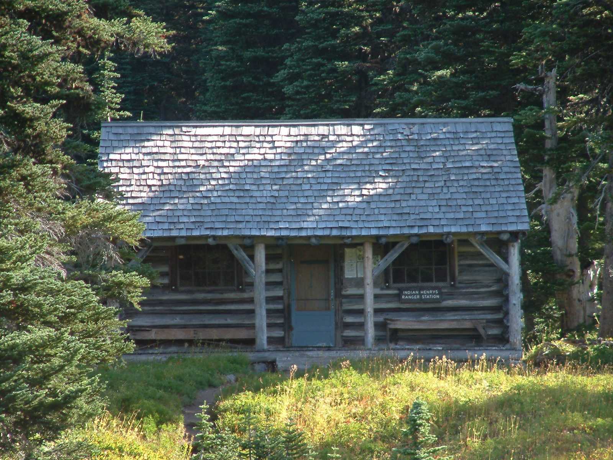
Photo: CBGCUP · Wikipedia, CC BY-SA 4.0 Indian Henry's Hunting Ground
Meadow spreads gold and green here, and the mountain finally shows itself whole. A 1915 patrol cabin still stands in the grass, named for Indian Henry, a Native guide to early parties on Rainier. Mirror Lakes lie a short spur away, holding the peak upside down in still water. Marmots whistle from the rocks. Few places on the loop feel this open.
-
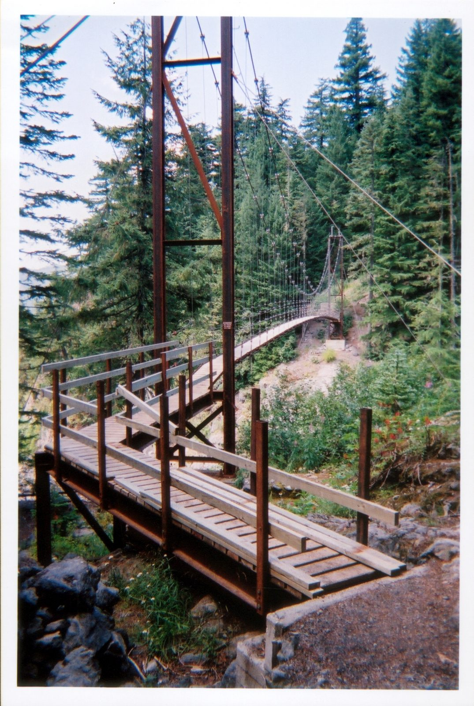
Photo: NPS · Wikimedia Commons, Public domain Tahoma Creek suspension bridge
A suspension bridge carries the trail high over Tahoma Creek, its cables swaying above the gorge. Below, gray glacial water grinds down from the South Tahoma Glacier, cold and thick with rock flour. The span bounces with every footstep. Emerald Ridge climbs beyond, steep through old-growth toward the Puyallup.
-
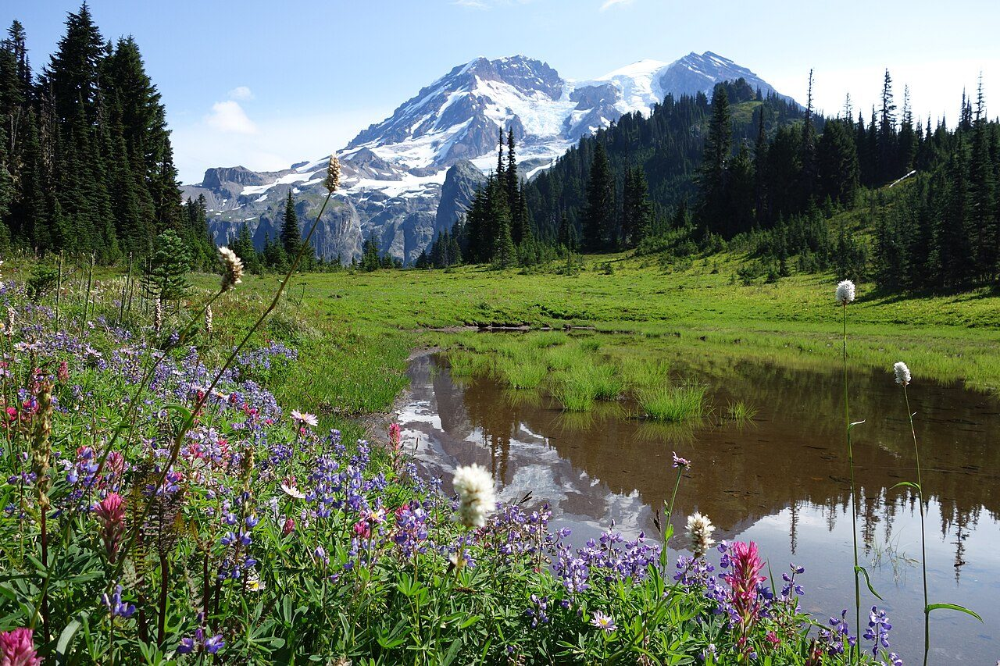
Photo: NPS Photo · Wikimedia Commons, Public domain Klapatche Park
By late afternoon the light comes level across Klapatche Park, and Aurora Lake holds a perfect copy of Rainier. This ridgetop meadow, near 5,500 feet, is many walkers' favorite camp on the west side. Heather and lupine crowd the tarn's edge. As the sun drops behind the Puyallup valleys, the mountain reddens above the water.
-
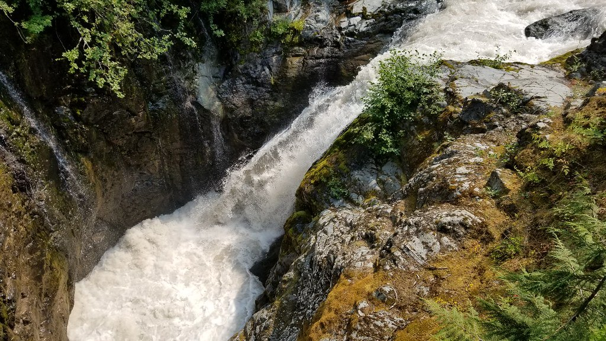
Photo: Dan Nevill · Flickr via Openverse, CC BY 2.0 North Puyallup River
Down through switchbacks the trail sheds the ridge and meets the North Puyallup River at 3,750 feet, milky with silt off the Puyallup Glacier. A stout log bridge spans the rush. Cool air pours down the canyon with the water, and the forest is deep and green. From this low point, the long climb toward Golden Lakes begins.
-
Golden Lakes
Small lakes scatter across the plateau at Golden Lakes, each one catching sky between the trees. A weathered patrol cabin keeps watch over the meadows, and the mountain floats to the east above miles of forest. Blueberries ripen along the shores in late summer. Evening turns the water the color the name promises, gold going to copper.
-
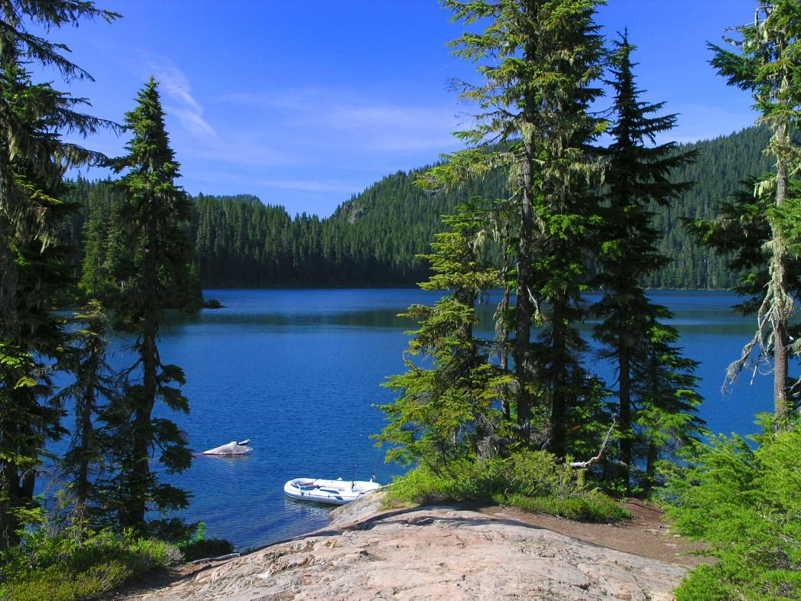
Photo: Bdevel · Wikipedia, CC BY-SA 2.5 Mowich Lake
Mowich Lake fills its deep basin below the road, the largest and deepest lake in the park, near 4,929 feet. A rare parked car and a pit toilet mark the return of the outside world, and some walkers resupply here. Raiding jays work the campsites for unguarded food. North of the water, the trail climbs toward the wildflowers of Spray Park.
-
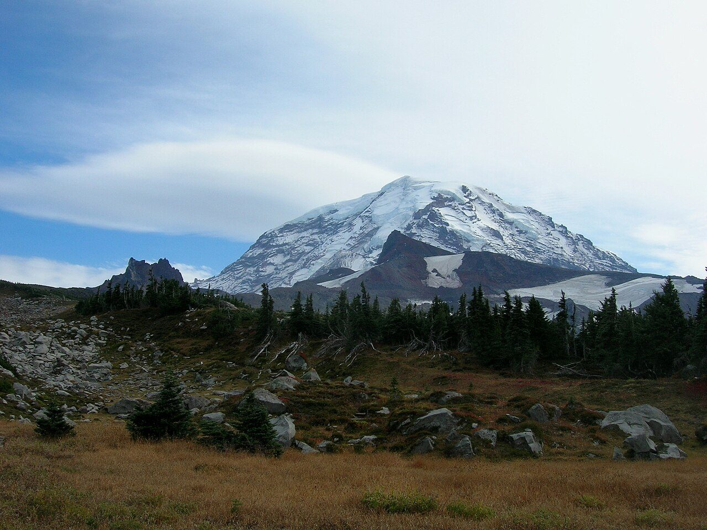
Photo: brewbooks from near Seattle, USA · Wikimedia Commons, CC BY-SA 2.0 Spray Park
Wildflowers take over above Mowich Lake, and Spray Park in August burns with lupine, paintbrush, and avalanche lily. Marmots sprawl on warm rock; a distant roar is Spray Falls dropping off the cliffs behind. The ice-hung Mowich Face fills the sky. This high, flowered bench is the reward for the long climb from the lake.
-
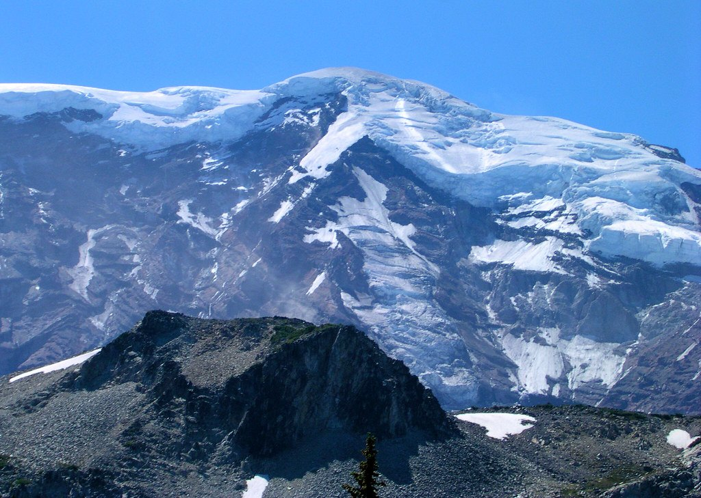
Photo: brewbooks · Flickr via Openverse, CC BY-SA 2.0 Mystic Lake
Mystic Lake lies still beneath the raw north face, mirroring Rainier whenever the wind drops. Just beyond, the Carbon Glacier grinds down to the lowest elevation of any glacier in the lower forty-eight, its snout black with rubble under Willis Wall. Meadows ring the water. This is the wild heart of the loop, far from any road, ice looming close.
-
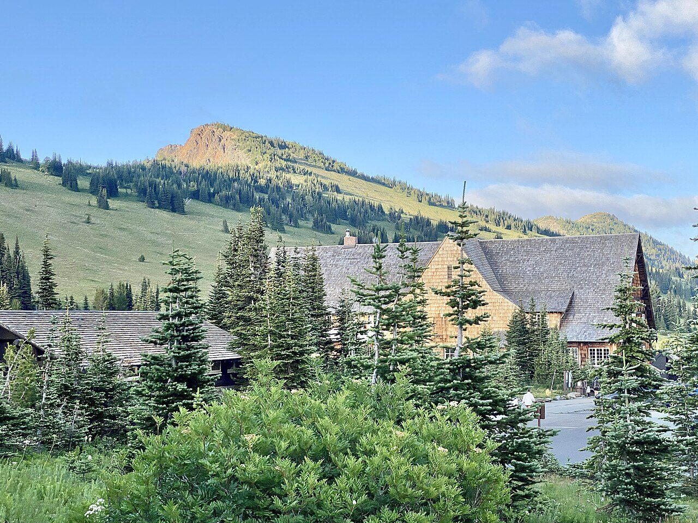
Photo: w_lemay · Wikimedia Commons, CC BY-SA 2.0 Sunrise
A road's end and a lodge mark Sunrise, 6,400 feet up and the highest point in the park a car can reach. The Emmons Glacier sprawls below, the largest glacier by area in the contiguous United States, a frozen river nearly a mile wide. Day hikers wander the paths in clean shoes, most a short stroll from the parking lot.
-
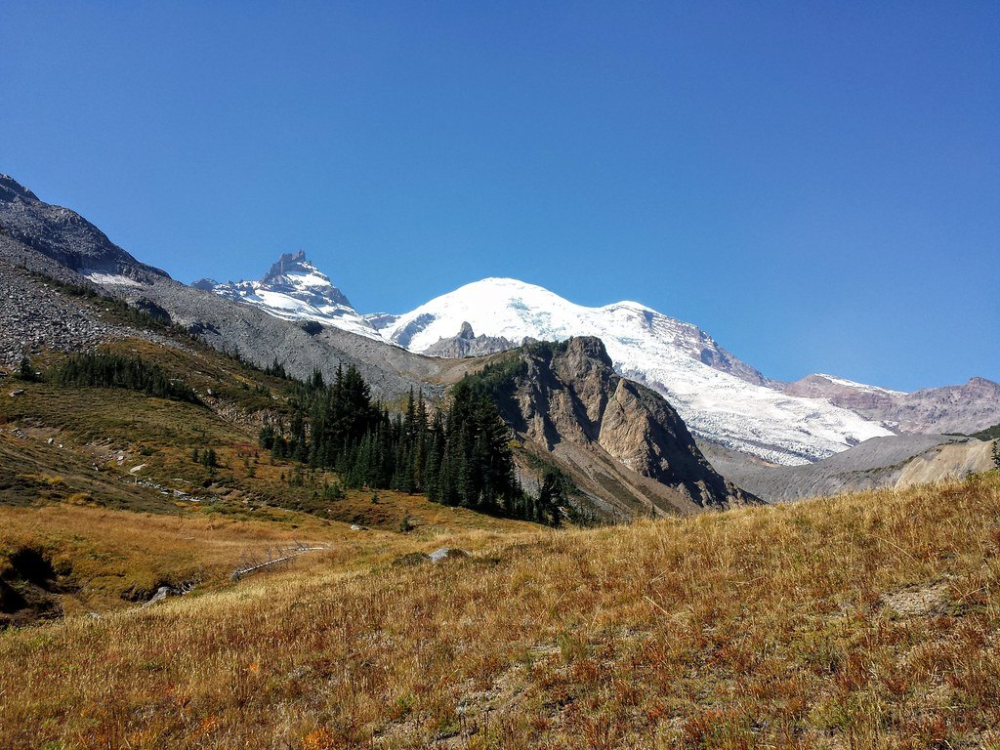
Photo: brewbooks · Flickr via Openverse, CC BY-SA 2.0 Summerland
After the climb through forest, Summerland opens as pure subalpine meadow near 5,900 feet, loud with marmots and the occasional clatter of mountain goats. A stone shelter raised by the Civilian Conservation Corps in the 1930s still stands against the weather. Lupine runs to the snow line. Above, the trail climbs into rock and lingering ice toward Panhandle Gap.
-
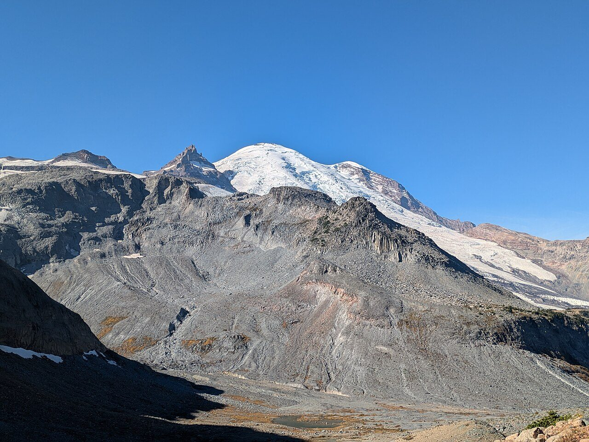
Photo: Buidhe · Wikimedia Commons, CC BY-SA 4.0 Panhandle Gap
Snow lingers here into August, and cairns mark the way across it. Panhandle Gap, 6,750 feet, is the highest point on the whole Wonderland Trail. Rainier stands to the west; eastward the Cowlitz country falls away in ridges. Mountain goats pick along the scree. Wind cuts through the notch, and the long descent to Indian Bar drops from this rim.
-
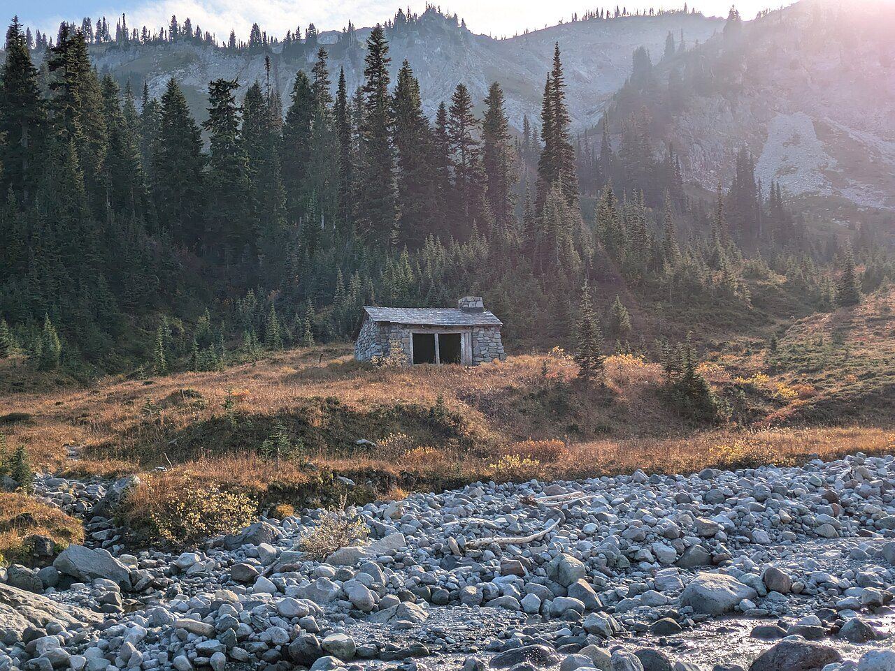
Photo: Buidhe · Wikimedia Commons, CC BY-SA 4.0 Indian Bar
A green cirque cradles Indian Bar, meltwater braiding through the meadow along the Ohanapecosh River. A squat stone shelter, another Civilian Conservation Corps build, sits above the flowers, and waterfalls thread the headwall behind. Many walkers call this the finest camp on the loop. Goats graze the far slopes at dusk. The Cowlitz Divide climbs away to the south.
-
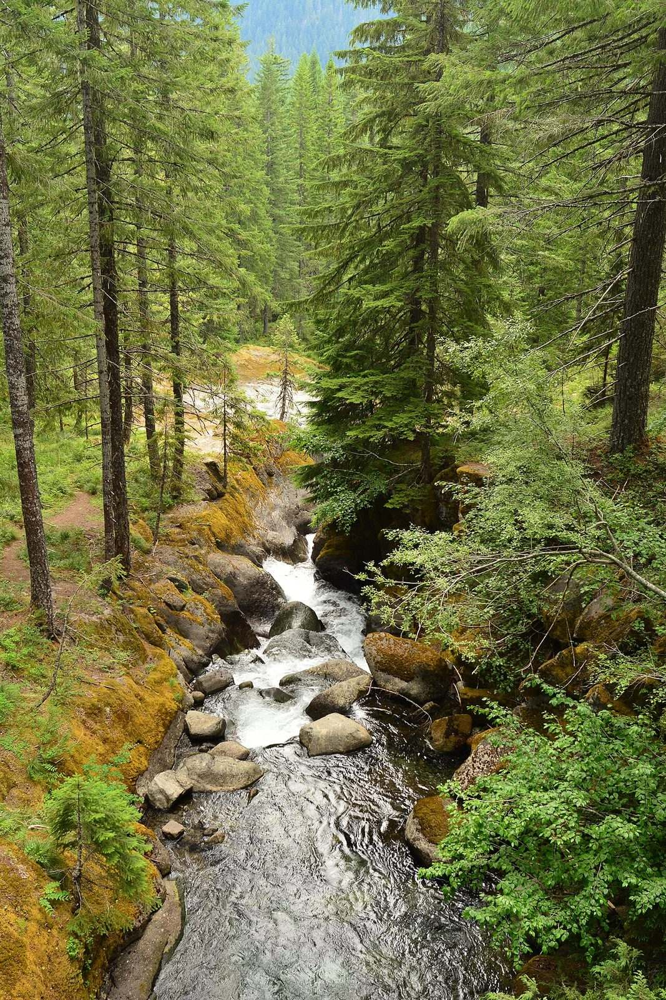
Photo: Joe Mabel · Wikimedia Commons, CC BY-SA 4.0 Nickel Creek
Forest closes back in at Nickel Creek, a small wooded camp at the foot of the long ridge walk down the Cowlitz Divide. The roar below is the Muddy Fork of the Cowlitz working its slot. It is an unshowy place, a night's rest between the high meadows behind and the canyon ahead. A footlog crosses the creek, and Box Canyon is barely a mile on.
-
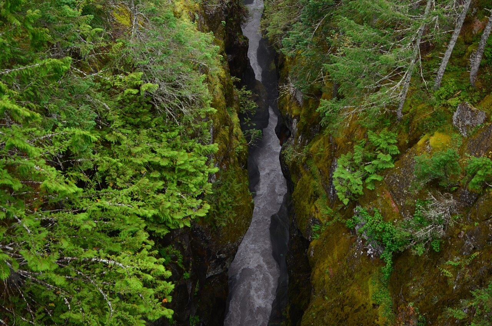
Photo: Joe Mabel · Wikimedia Commons, CC BY-SA 4.0 Box Canyon
The Muddy Fork of the Cowlitz vanishes into a slot at Box Canyon, a gorge barely thirteen feet wide yet dropping well over a hundred feet. The Stevens Canyon road crosses here, cars whirring past on their way to Paradise. Far below the rail the water shows as a green thread, all but hidden where the walls nearly touch. Old-growth resumes on the far side.
-
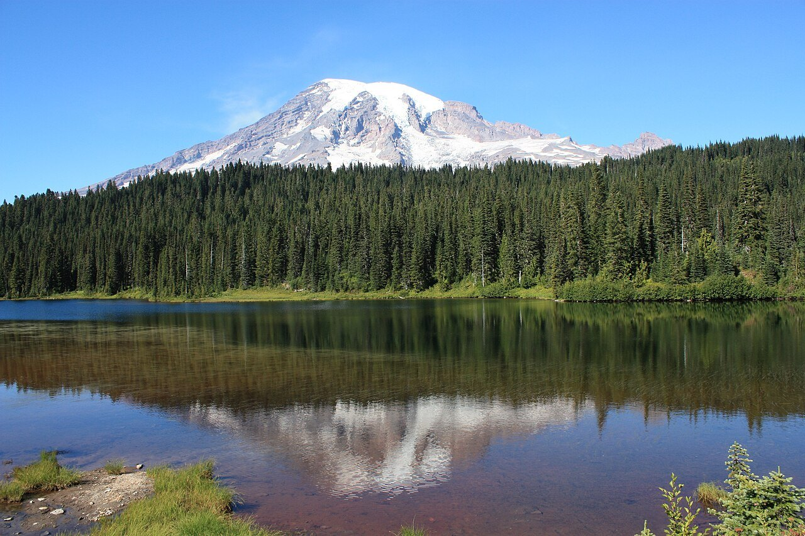
Photo: Meckser · Wikimedia Commons, CC BY-SA 3.0 Reflection Lakes
Rainier doubles itself in the still water at Reflection Lakes, roadside and famous, near 4,900 feet beneath Paradise. Photographers line the shoulder at dawn for the mirrored peak. Seen here from the south one last time, the mountain has now shown every face. Only a few miles of forest and the drop to Longmire remain.
-
Longmire
Cedars close overhead again, and the porch of the National Park Inn returns into view. Ninety-three miles and some 22,000 feet of climbing complete the circle, the whole of Mount Rainier rounded and its glaciers seen from every face. Boots come off ruined, legs turned to iron. The loop shuts exactly where it opened, the mountain standing at the walker's back, whole.
Walking the Wonderland Trail
Your watch is already counting these steps. Watch Walks spends them on the Wonderland Trail, all 150 km of it, and hands you each landmark as you reach it. There's no route recording, no account and no ads. The Inca Trail is free; this one is a one-time purchase with no subscription.
Other trails in North America
- Appalachian Trail 3,536 km · USA
- Pacific Crest Trail 4,265 km · USA
- Route 66 3,940 km · USA
- John Muir Trail 340 km · USA (California)
- The Long Trail 439 km · USA (Vermont)
- Tahoe Rim Trail 265 km · USA (California/Nevada)